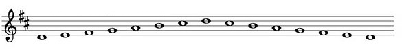
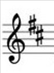

Урок 16. Строение гаммы Ре-мажор.
Теория
Гамма Ре-мажор — это последовательность из семи звуков, построенная по определённому порядку тонов и полутонов, начиная с ноты Ре.
- В гамме Ре-мажор используются ноты: Ре, Ми, Фа♯, Соль, Ля, Си, До♯, Ре.
- Отличительная особенность гаммы Ре-мажор — наличие двух диезов: Фа♯ и До♯.
- Порядок тонов и полутонов: между Ре–Ми, Фа♯–Соль, Соль–Ля, Ля–Си — тон; между Ми–Фа♯ и Си–До♯ — тон; между До♯–Ре — полутон.
Строение гаммы Ре-мажор: тон — тон — полутон — тон — тон — тон — полутон.
В начале нотной строки после ключа ставятся два диеза — это знак гаммы Ре-мажор.
Знание строения гаммы помогает правильно исполнять мелодии и аккорды в тональности Ре-мажор.
Упражнения
- Распознавание интервала: Определите, какой интервал между нотами — тон или полутон (Между Ре и Ми — тон; Между Ми и Фа♯ — тон; Между Си и До♯ — тон; Между До♯ и Ре — полутон).
- Пение: Пропойте гамму Ре-мажор вверх и вниз, обращая внимание на полутоны (Ре, Ми, Фа♯, Соль, Ля, Си, До♯, Ре).
Аудио-примеры
Гамма Ре-мажор вверх и вниз:
Визуальные примеры
Строение гаммы Ре-мажор на нотном стане:

Два диеза после ключа:
